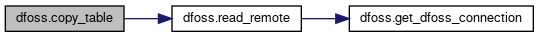

Functions | |
| def | get_dfoss_connection () |
| Return connection to DFOSS database. More... | |
| def | read_remote (stmt) |
| Execute statement and return DataFrame with results. More... | |
| def | copy_table (stmt_select, local_table, index, delete_all=False) |
| Copy contents of remote table to local database. More... | |
| def | copy_ct_wstn () |
| Copy CT_WSTN (code table for weather stations) More... | |
| def | copy_wforecast (copy_all=False) |
| Load forecast weather data. More... | |
| def | copy_wobserv (copy_all=False) |
| Load observed weather data. More... | |
| def | get_fires () |
| Load fire data. More... | |
| def | load () |
| Load data for all tables. More... | |
| def | load_past_records () |
| Load all data for current year. More... | |
Variables | |
| string | DBNAME = 'DFOSS_{}'.format(datetime.datetime.now().year) |
| Name of database to load data into. | |
| string | SCHEMA = r'[INPUTS]' |
| Schema that tables exist in. | |
Detailed Description
DFOSS database access and queries
Function Documentation
◆ copy_ct_wstn()
| def dfoss.copy_ct_wstn | ( | ) |
◆ copy_table()
| def dfoss.copy_table | ( | stmt_select, | |
| local_table, | |||
| index, | |||
delete_all = False |
|||
| ) |
Copy contents of remote table to local database.
- Parameters
-
stmt_select SQL statement for reading data local_table Table in local database to insert into index Index for data that gets read delete_all Whether or not to clear entire table before adding data
- Returns
- None
Definition at line 45 of file dfoss.py.
Here is the call graph for this function:

Here is the caller graph for this function:

◆ copy_wforecast()
| def dfoss.copy_wforecast | ( | copy_all = False | ) |
◆ copy_wobserv()
| def dfoss.copy_wobserv | ( | copy_all = False | ) |
◆ get_dfoss_connection()
| def dfoss.get_dfoss_connection | ( | ) |
◆ get_fires()
| def dfoss.get_fires | ( | ) |
◆ load()
| def dfoss.load | ( | ) |
◆ load_past_records()
| def dfoss.load_past_records | ( | ) |
◆ read_remote()
| def dfoss.read_remote | ( | stmt | ) |